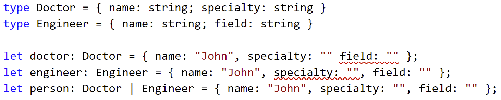
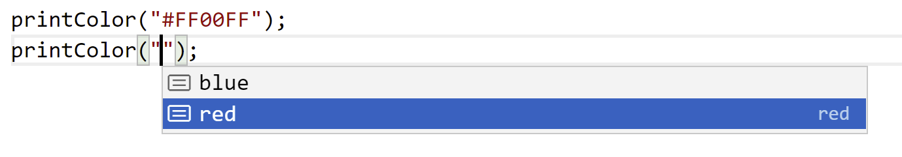

Titian Cernicova-Dragomir
keyof
typeof
{ foo: number }
foo
number
{ bar: number }
bar
string
never
unknown
{ foo: 1 }
{ foo: 1, bar: 2 }
{ foo: number } | { bar: number }
string | number
{ foo: number } & { bar: number }
number & string
How can I represent an object that is either a Engineer or a Doctor?
Engineer
Doctor
interface Engineer { name: string; age: string; field: string } interface Doctor { name: string; age: string; speciality: string }
Use a union
Why can't I access some union properties?
You can only safely access common properties. You need to narrow the type of a union
value
'property' in value
in
typeof value === 'valid type'
How can I strictly type the align property of an element (it can be one of the strings: "center", "left", "right")?
"center"
"left"
"right"
Use string literal types
0
100
boolean
true
false
null
undefined
value === constant
value !== constant
!value
if
switch(value)
Without strictNullChecks:
strictNullChecks
With strictNullChecks:
string | null
Why does my union allow properties from any union constituent?

By design. Use a discriminated union
obj
type
obj.type === constant
obj.type !== constant
!obj.type
obj.type
switch(obj.type)
If I have a union "yes" | "no" | 0 | 1 how can I get the string or number constituents?
"yes" | "no" | 0 | 1
Use an intersection
("yes" | "no" | 0 | 1) & string
("yes" & string) | ("no" & string) | (0 & string) | (1 & string)
("yes" & string) | ("no" & string) | never | never
D
P
D & P
"yes" | "no" | never | never
"yes" | "no"
Given a discriminated union, how can we filter out a specific union constituent?
type Person = { type: "e"; name: string; field: string } | { type: "d"; name: string; speciality: string } type Doctor = { type: "d"; name: string; speciality: string }
type Doctor = { type: "x"} & { type: "d" name: string; age: string; speciality: string } /* = never */
Can I offer some completions on a string value?

Naive answer: string | "red" | "blue"
string | "red" | "blue"
D | P
How can I ensure that a string is a file path?
type Path = string; function copy(source: Path, destination: Path) { /*...*/ } copy("AAA", "BBB"); // should be errors
We can use branded types
How can we get a type with all the keys in an object type ?
type Person = { name: string; age: number } type PersonKeys = "name" | "age"
Using the keyof operator
How can we get a type of a variable?
let env = { "SERVER": "url", "PORT": 8080 } type Env = { "SERVER": string, "PORT": number }
Use the typeof operator
type Book = { pages: number; fontSize: number; name: string; author: string } type R = ValueOf<Book> // string | number
How can we get the type of a property in an object ?
type Book = { pages: number; fontSize: number; name: string; author: string } type TypeOfPages = number // Get the type of pages in Book
Use an indexed type
T[K]
T
Book
typeof env
K
"name"
T[K1 | K2 | ... | Kn]
T[K1] | T[K2] | ... | T[Kn]
How can we make a function to get a value in an object safely
const env = { "SERVER": "", "PORT": 7808 } let server = getValue("SERVER"); // ideally string let port = getValue("PORT") // ideally number let pport = getValue("PPORT") // ideally error
Use index access types, keyof and a generic function
Partial
Record
Readonly
Required
Pick
Omit
Exclude<T,U>
U
NonNullable<T>
Extract<T,U>
Awaited
ReturnType
InstanceType
ConstructorParameters
Parameters
function connect(host: string, port: number): void function connect(cfg: { host: string, port: number }): void function connect(cfgOrHost: { host: string, port: number } | string, maybePort?: number) { if (typeof cfgOrHost === "string") { const host = cfgOrHost; const port = maybePort! // Yeah, I KNOW it a port TS! internal(host, port); } else { internal(cfgOrHost.host, cfgOrHost.port); } }
declare function connect(host: string, port: number): void function connectWithMessage(host: string, port: number): void { try { connect(host, port) }catch(e) { console.log("Error occured"); } }
We can use Parameters
Can we add parameters when we copy parameters from another function?
We can use ... to spread tuple types in other tuple types.
...
function wrapWithLog(mesage: string, fn: any) { return (...a: any) => { console.log(`Executing ${mesage}`); try { return fn(); } finally { console.log(`Executed ${mesage}`); } } }
Either using Parameters/ReturnType or direct inference.
function promiseArgs<T extends any[], R>(fn: (...a: T) => R) { return async (...a: any[] /* Promisify T */) => { return await fn(... (await Promise.all(a)) as T); } }
Either using Parameters & ReturnType or direct inference.
How can we create a type with return type of all functions in another type
type EnvGetters = { "SERVER": () => string, "PORT": () => number } type Env = { "SERVER": string, "PORT": number }
Use a custom mapped type in conjunction with the conditional type ReturnType
{ [P in K]: U }
P in K
"name" | "field"
"field"
: U
Env[P]
T[P]
{ [P in keyof T]: U } type G<K extends keyof T> = { [P in K]: U}
{ [P in keyof T]: U }
type G<K extends keyof T> = { [P in K]: U}
keyof T
{ readonly [P in keyof T]: U }
readonly
{ -readonly [P in keyof T]: U }
{ [P in keyof T] ?: U }
?
{ [P in keyof T]-?: U }
-?
How can we correctly type a function that return a string or a number based on the type of a passed in parameter
function getSampleData(value: "string" | "number"): string | number { return value === "string" ? "Test Data" : 0 }
We can use conditional types
type X = TestedType extends PotentialBaseType ? TypeIfTrue: TypeIfFalse
cond ? tValue: fValue
TestedType
extends
PotentialBaseType
TypeIfTrue
TestedType extends PotentialBaseType
TypeIfFalse
How can we get the properties of a specific type from a given type
type Book = { pages: number; fontSize: number; name: string; author: string } type StringKeys = "name" | "author"
We can use mapped and conditional types
as
{ [P in K as C]: U }
C
symbol
How can we extract or exclude constituents of a union that extend a specific type:
type Shape = | { radius: number, color: string } | { height: number, color: string } | { height: number, fill: string } type FilledShapes = { height: number, fill: string }
We can use the predefined conditional types Extract and Exclude
Extract
Exclude
T extends ...
C<T1 | T2 | ... | Tn> = C<T1> | C<T2> | ... | C<Tn>
Extract<0 | 1 | "yes" | "no", string> = T extends U ? T : never
(0 extends string ? 0 :never) | (1 extends string ? 0 :never) | ("yes" extends string ? "yes" :never) | ("no" extends string ? "no" :never)
never | never | "yes" | "no"
[T]
T extends T
T extends unknown
T extends any
Staring with the union string | number can we create a new union string[] | number[]
string[] | number[]
Yes we can using distributive conditional types
type Person = | { name: string; field: string } | { name: string; specialty: string } type Keys = KeyOfAll<Person> // "name" | "specialty" | "field"
We can use distributive conditional types
type EnvGetters = { "SERVER": () => Promise<string>, "PORT": () => Promise<number> } type Env = { "SERVER": string, "PORT": number }
Yes, we can use conditional types
T extends B<infer U1, infer U2, ... infer Un> ? R<U1, U2, ..., Un> : F
infer
Can we create a type that has get / set methods for each member of another type?
get
set
type Env = { "isServer": string; "maxRequestsPerMinute": number; } type EnvData = { "getIsServer": () => string; "getMaxRequestsPerMinute": () => number; }
We can use template literal types
Capitalize
Capitalize<"initData"> = "InitData"
Uncapitalize
Uncapitalize<"InitData"> = "initData"
Uppercase
Uppercase<"Init"> = "INIT"
Lowercase
Uppercase<"Init"> = "init"
How can we transform snake case properties names to camel case property names?
type Env = { "X_IS_ADMIN" : boolean; "X_MAX_REQUESTS_PER_MINUTE": number; } type EnvData = { "isAdmin": boolean, "maxRequestsPerMinute": number; }
We can use template literal types in recursive conditional types.
Questions on: @TitianCernicova
Is it possible to create a type that makes all nested properties readonly?
type Env = { restApi: { server: string, port: number } dbServers: Array<{ server: string, port: number }> } type ReadonlyEnv = { readonly restApi: { readonly server: string, readonly port: number } readonly dbServers: Array<{ readonly server: string, readonly port: number }> }
We can use a custom mapped type that is recursive.
UnionToIntersection
Can we convert a union to an intersection?
type U = { foo: number } | { bar: number } type I = { foo: number } & { bar: number }
We can use the inference behavior of conditional types.
1. What is a tuple type 2. Labeled/optional/ rest stuff